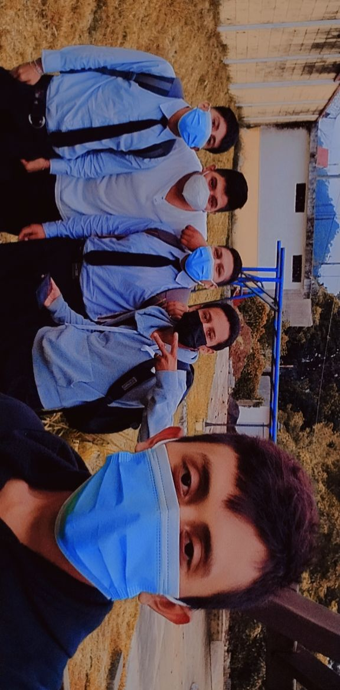
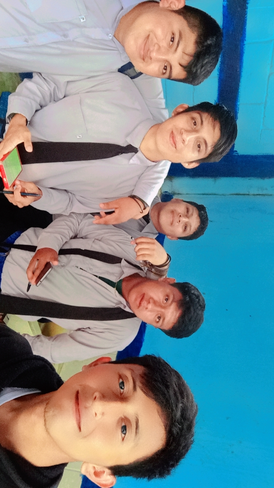

Mi nombre es Willian Rubén Puy Luis, nací el 1 de abril del año 2006, vivo en Caserío San Eduardo en el municipio de San Miguel Pochuta.
Soy hijo de Rosalina Luis y Rubén Puy, soy hermano menor de dos hermanas las cuales son: Jessica Yanira Puy Luis y Lilian Vanessa Puy Luis.
AÑO 2006
El año 2006 fue el año en el que naci, todo empezo desde un 1ro de abril,
yo vivia en "santa Ana" y por el lotivo que me causaba probles el lugar en donde vivia
mi familia decidio ir a vivir en una vivienda que tenia mi abuelo.
AÑO 2007
Pues en estos años no puedo decir mucho, llego el primero de abril y cumpli mi
primer año de vida.
AÑO 2008
para este tiempo cumplo dos años de vida, en este año lamenteblemente mi familia
sufre el fallecimiento de mi tercera hermana que se llamaba Roxana, lamentablemente no la
pude conocer ya que estaba muy pequeño para recordar.
AÑO 2009
Llego el tiempo de cumplir tres años de vida, todo en este tiempo esta bien,
mi familia esta feliz y todos nos reunimos para las fiestas de final de año.
AÑO 2010
Para este tiempo cumpliria cuatro años, aun estoy muy pequeño para recordar
las cosas que hacia en ese entonces, asi que me basaré en cosas que cuentan,
para este año mi mama solia llevarme a las posadas para las epocas navideñas.
AÑO 2011
Cumplo 5 años de vida, sigo sin recordar las cosas que hacia o me pasaban a esta edad,
mi mama me seguia llevando a las posadas ya tradicionales, para este tiempo nos acompañaba mi tia,
dentro de las posadas al finalizar se hace una pequeña dinamica que trata de responder cantando.
AÑO 2012
cumplo 6 años de vida, en este año entro por primera vez a la escuela parvulos,
recuerdo que el primer dia me quede llorando ya que nunca habia vivido algo asi.
AÑO 2013
Cumplo 7 años, entro a la primaria y conosco a mis compañeros con los que pasare 6 años estudiando
juntos, recuerdo que la maestra que me daba clases en primero se llamaba Rina.
AÑO 2014
cumplo 8 años de vida, y logro pasar primero primaria, conosco mejor a mis compañeros,
por suerte vivien serca de mi casa y desde primero primaria vamos y regresamos solos a la escuela.
mi maestra se llamaba Nidia.
AÑO 2015
Cumplo 9 años, todos mis compañeros seguimos juntos excepto uno que no pudo pasar, en este grado
llevabamos suplementod de limpiezqa personal, todos llevaban javon, cepillo, pasta de dientes
y yo llevaba un toallita y una pequeña cubeta para guardar mis cosas ya que se quedaban en la escuela,
mi maestra se llamaba Farida.
AÑO 2016
Gane tercero primaria y cunmplo 10 años, todos mis compañeros seguimos juntos y para este grado ya hacemos
trabajos grupales, cosa que me gustaba ya que podia compartir un buen rato con mis amigos, mi maestra se llamaba Marta Julia.
para este cumpleaños se reunio la familia e hicieron un almuerzo.
AÑO 2017
Voy a cumplir 11 años, la maestra que me daba calses se llamaba Dina, para el cumpleaños de esta maestra
mis compañeros y yop nos pusimos de acuerdo para organizarle una fiesta sorpresa y asi lo hicimos,
le dijimos al señor director y si nos acepto la propuesta.
fue muy divertido.
AÑO 2018
Cunmplire 12 años, es este grado mi maestra se llamaba Surama, ella nos dijo que disfrutaramos
de este año, ya que seria el lultimo año que estariamos estudiando todos mis compañeros juntos
y que terminado este año todo seria diferente y asi lo hicimos.
AÑO
Cumplo 13 años, entro a estudiar el ciclo basico en el instituto "Carlos luttman Klense"
la maestra tenia razon, todo ahi era diferente mis compañeros y yo tambien estudiamos alli,
pero en secciones, tube la suerte de que me tocara con algunos de mis compáñeros,
tambien conoci gente nueva de otras escuelas.
AÑO 2020
Cumplo 14 años, al inicio del año todo marchaba bien, mis estudios seguian igual, hasta que
se escuchaba de una fuerte enfermedad que se estaba extendiendo en el mundo, Covid-19,
no creia que esa enfermedad llegara a Guatemala, pero llego, en la escuela dieron
que no ibamos a estudiar una semana por motivos de esa enfermedad, si tan solo hubieran sabido lo que se venia.
AÑO 2021
Cumplí 15 años, los estudios cambiaron pór completo, ya no se recibian clases y todos deberian
usar marcarilla y al que no quisiera le cobrarian multa.
comviví mas con mi primo llamado Kevin, el me enseño sus gustos musicales y por suerte a mi tambien me gustaron
la musica que mi primo escuchaba tubo su epoca de oro en el año 2013 en el que se escuchaba el "DUBSTEP"
mi primo estaba mas avanzado en este tema mas que yo y habia compuesto sus propios temas,
lo que nos llevo a producir nuestra primera cacion juntos.
AÑO 2022
Cumplo 16 años, logro terminar el ciclo basico y empiezo la carrera,
estoy estudiando un "Bachiller en ciencias y letras con orientacion en computacion" en el
INSTITUTO NACIONAL DE EDUCACION DIVERSIFICADA "SAN Miguel"
el gusto por el genero musical sigue igual lo que me llevo a producir mi propía musica,
y hacer mas con mi primo.

AÑO 2023
Actualmente tengo 17 años, y sigo cursando la carrera, le celebramos su cumpleaños
al profesor de especialidad llamado Mario, menciono que fuimos el primer grupo en hacer este tipos
de actividad,
en este momento me encuetro haciendo mi examen de tercer bimiestre, y espero que si pueda ir al viaje
de la antorcha ya que nunca he asistido a uno de esos
